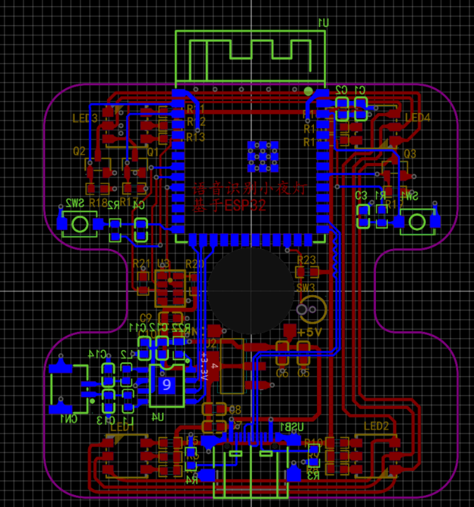
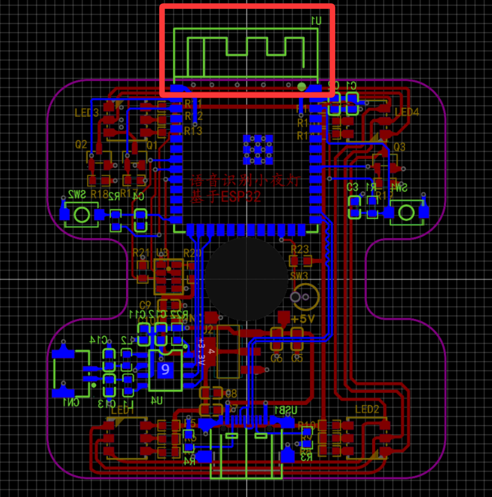
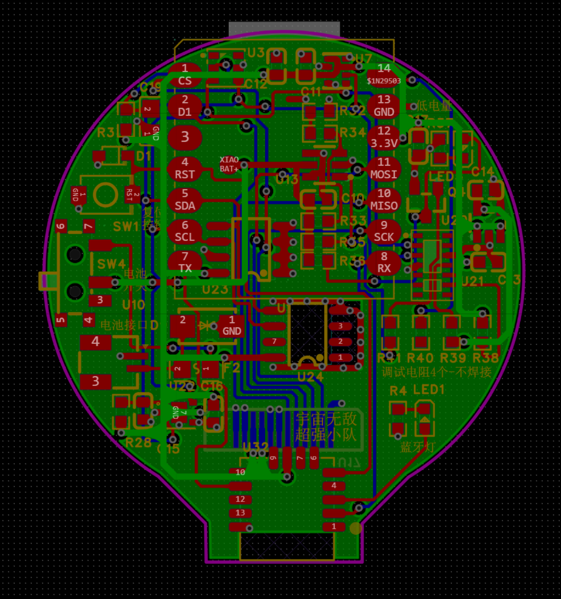

单板开发流程之PCB设计
1. 板框层绘制
根据尺寸要求及安规要求绘制PCB的边界。板子拐角处不能太尖锐，需做平滑处理，避免划伤使用者（参考紫色边框示例）。

2. 器件预布局
遵循三大核心原则：模拟电路与数字电路分区、功能板块就近布局、高中低频器件隔离（从板边到板内依次排布高频、中频、低频器件）。
2.1 特殊器件处理
- 蓝牙、温度计需进行包地净空处理。
- 蓝牙、USB、SD卡尽量靠近板边放置，与板边预留3mm左右距离。
- 温度敏感元件（如温度计）附近需加装散热片。

3. 布线设计（基于信号完整性及电源完整性要求）
3.1 信号线设计
- 核心要求：避免交叉，布线短且直接，提升信号传输可靠性。
- 遵循规则：3W规则（地线＞电源线＞信号线）、层级排布顺序（四层板：信号—电源—地—信号）、差分线对称原则。
- 高速差分信号（如USB线）：采用等长、等间距设计，确保信号同步和阻抗匹配，远离其他信号线。
- 线宽规范：信号线建议0.2mm，电源线建议0.3-0.4mm。
- 长距离高速走线：增加匹配电阻，防止信号振铃和反射。
线宽、覆铜厚度与通过电流对应关系
| 线宽(mm) | 铜厚1OZ(0.035mm)电流(A) | 铜厚1.5OZ(0.05mm)电流(A) | 铜厚2OZ(0.07mm)电流(A) |
|---|---|---|---|
| 0.15 | 0.2 | 0.5 | 0.7 |
| 0.2 | 0.55 | 0.7 | 0.9 |
| 0.3 | 0.8 | 1.1 | 1.3 |
| 0.4 | 1.1 | 1.35 | 1.7 |
| 0.5 | 1.35 | 1.7 | 2.0 |
| 0.6 | 1.6 | 1.9 | 2.3 |
| 0.8 | 2.0 | 2.4 | 2.8 |
| 1.0 | 2.3 | 2.6 | 3.2 |
| 1.2 | 2.7 | 3.0 | 3.6 |
| 1.5 | 3.2 | 3.5 | 4.2 |
| 2.0 | 4.0 | 4.3 | 5.1 |
| 2.5 | 4.5 | 5.1 | 6.0 |
3.2 过孔处理
- 核心要求：合理选择过孔尺寸和间距，保障信号与电流传输。
- 高速大电流信号：采用大直径过孔并增加数量，推荐过孔直径0.45-0.2mm左右。
过孔直径与允许电流对应关系（不同温升）
| 过孔直径(mil) | 温升10℃电流(A) | 温升20℃计算值(A) | 温升20℃推荐值(A) |
|---|---|---|---|
| 10 | 1.0 | 1.6072 | 1.1848 |
| 12 | 1.2 | 1.3415 | 1.8199 |
| 16 | 1.4 | 1.5521 | 2.1056 |
| 20 | 1.5 | 1.7646 | 2.3938 |
| 24 | 1.6 | 1.9720 | 2.5396 |
| 40 | 2.3 | 2.5267 | 3.4305 |
| 80 | 3.6 | 3.9433 | 5.3496 |
3.3 EMC设计
- 信号层与电源层分离，避免电源高频噪声干扰信号。四层板示例：顶层/底层走信号线（蓝色和红色），内电层走电源线（绿色），且电源线宽度大于信号线。
- 选用带金属屏蔽或具备电磁屏蔽功能的元器件。
- 开关电源选型：优先选用高效率、低电磁干扰的电源模块（如DCDC替代LDO）。
- 电源输入输出端接滤波器，抑制高频干扰。
- 整个电磁设备加装金属外壳。
- 布线规范：电源线短而直，减少迂回交叉；高速信号线远离低速信号线，模拟信号线远离数字信号线，避免平行走线。

4. PCB低功耗设计
- 选用低功耗芯片（如支持睡眠模式的MCU）和低静态电流芯片，降低待机功耗。
- 采用高效降压芯片，优先选择DCDC（转换效率优于LDO）。
- 布线优化：使用宽电源线降低压降，电源层和GND层设计大而完整，减少电源传输阻抗。
- 做好阻抗匹配，减少信号反射和损耗。
- 软件优化：编写高效代码减少资源占用，采用中断处理机制，空闲时使MCU进入睡眠状态，仅在中断或特定事件触发时唤醒。